# load packages
library(tidyverse) # for data wrangling and visualization
library(tidymodels) # for modeling
library(usdata) # for the county_2019 dataset
library(openintro) # for the duke_forest dataset
library(scales) # for pretty axis labels
library(glue) # for constructing character strings
library(knitr) # for pretty tables
# set default theme and larger font size for ggplot2
ggplot2::theme_set(ggplot2::theme_minimal(base_size = 16))SLR: Simulation based-inference
STA 210 - Spring 2022
Welcome
Announcements
- HW 1 posted tomorrow, due next Friday
Computational setup
Recap of last lecture
Terminology
- Outcome: y
- Predictor: x
- Observed y, \(y\): truth
- Predicted y, \(\hat{y}\): fitted, estimated
- Residual: difference between observed and predicted outcome for a given value of predictor
Model evaluation
- One concern in evaluating models is how well they do for prediction
- We’re generally interested in how well a model might do for predicting the outcome for a new observation, not for predicting the outcome for an observation we used to fit the model (and already know its observed value)
- Evaluating predictive performance: Split the data into testing and training sets, build models using only the training set, and evaluate their performance on the testing set, and repeat many times to see how your model holds up to “new” data
- Quantifying variability of of estimates: Bootstrap the data, fit a model, obtain coefficient estimates and/or measures of strength of fit, and repeat many times to see how your model holds up to “new” data
- Today we introduced these concepts, throughout the semester we’ll learn how to implement them (i.e., write the code) and how to interpret their results
Uninsurance vs. HS graduation in NC
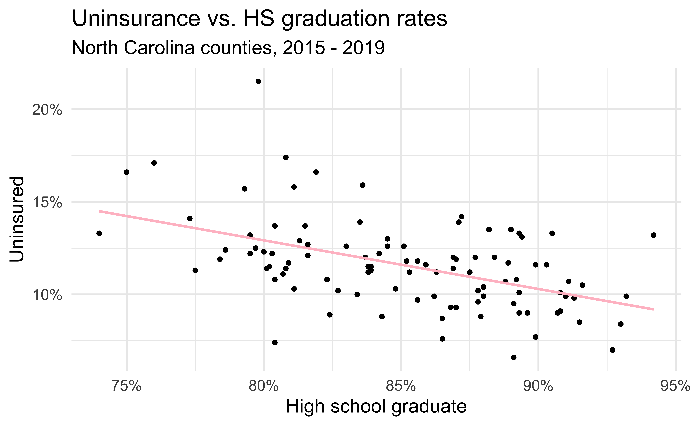
Uninsurance vs. HS graduation in NY
Code
county_2019_ny <- county_2019 %>%
as_tibble() %>%
filter(state == "New York") %>%
select(name, hs_grad, uninsured)
ggplot(county_2019_ny,
aes(x = hs_grad, y = uninsured)) +
geom_point() +
scale_x_continuous(labels = label_percent(scale = 1, accuracy = 1)) +
scale_y_continuous(labels = label_percent(scale = 1, accuracy = 1)) +
labs(
x = "High school graduate", y = "Uninsured",
title = "Uninsurance vs. HS graduation rates",
subtitle = "New York counties, 2015 - 2019"
) +
geom_smooth(method = "lm", se = FALSE, color = "pink")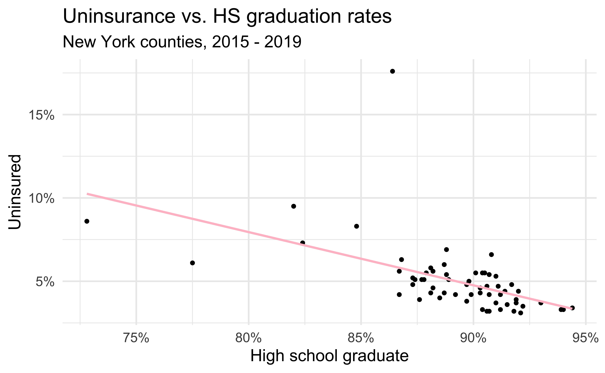
Data splitting
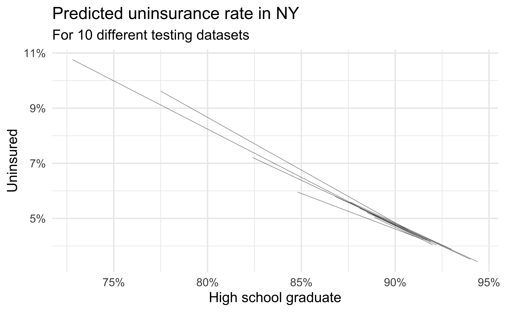
Bootstrapping
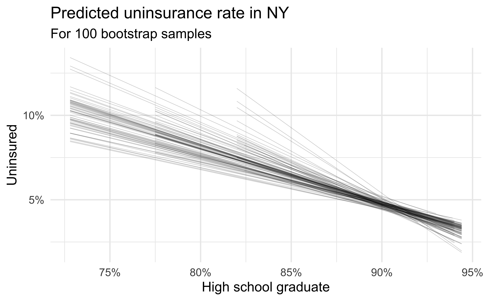
Comparing NY and NC
Why are the fits from the NY models more variable than those from the NC models?
Statistical inference
Data: Sale prices of houses in Duke Forest
- Data on houses that were sold in the Duke Forest neighborhood of Durham, NC around November 2020
- Scraped from Zillow
- Source:
openintro::duke_forest

Exploratory analysis
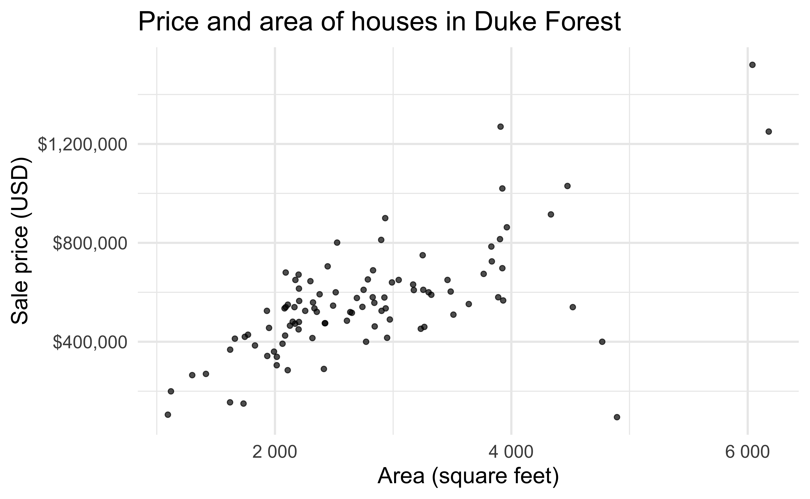
Modeling
df_fit <- linear_reg() %>%
set_engine("lm") %>%
fit(price ~ area, data = duke_forest)
tidy(df_fit) %>%
kable(digits = 2)| term | estimate | std.error | statistic | p.value |
|---|---|---|---|---|
| (Intercept) | 116652.33 | 53302.46 | 2.19 | 0.03 |
| area | 159.48 | 18.17 | 8.78 | 0.00 |
. . .
- Intercept: Duke Forest houses that are 0 square feet are expected to sell, on average, for $116,652.
- Slope: For each additional square foot, the model predicts the sale price of Duke Forest houses to be higher, on average, by $159.
Sample to population
For each additional square foot, the model predicts the sale price of Duke Forest houses to be higher, on average, by $159.
- This estimate is valid for the single sample of 98 houses.
- But what if we’re not interested quantifying the relationship between the size and price of a house in this single sample?
- What if we want to say something about the relationship between these variables for all houses in Duke Forest?
Statistical inference
Statistical inference allows provide methods and tools for us to use the single sample we have observed to make valid statements (inferences) about the population it comes from
For our inferences to be valid, the sample should be random and representative of the population we’re interested in
Inference for simple linear regression
Calculate a confidence interval for the slope, \(\beta_1\)
Conduct a hypothesis test for the interval, \(\beta_1\)
Confidence interval for the slope
Confidence interval
- A plausible range of values for a population parameter is called a confidence interval
- Using only a single point estimate is like fishing in a murky lake with a spear, and using a confidence interval is like fishing with a net
- We can throw a spear where we saw a fish but we will probably miss, if we toss a net in that area, we have a good chance of catching the fish
- Similarly, if we report a point estimate, we probably will not hit the exact population parameter, but if we report a range of plausible values we have a good shot at capturing the parameter
Confidence interval for the slope
A confidence interval will allow us to make a statement like “For each additional square foot, the model predicts the sale price of Duke Forest houses to be higher, on average, by $159, give or take X dollars.”
Should X be $10? $100? $1000?
If we were to take another sample of 98 would we expect the slope calculated based on that sample to be exactly $159? Off by $10? $100? $1000?
The answer depends on how variable (from one sample to another sample) the sample statistic (the slope) is
We need a way to quantify the variability of the sample statistic
Quantify the variability of the slope
for estimation
- Two approaches:
- Via simulation (what we’ll do today)
- Via mathematical models (what we’ll do in the next class)
- Bootstrapping to quantify the variability of the slope for the purpose of estimation:
- Bootstrap new samples from the original sample
- Fit models to each of the samples and estimate the slope
- Use features of the distribution of the bootstrapped slopes to construct a confidence interval
Bootstrap sample 1

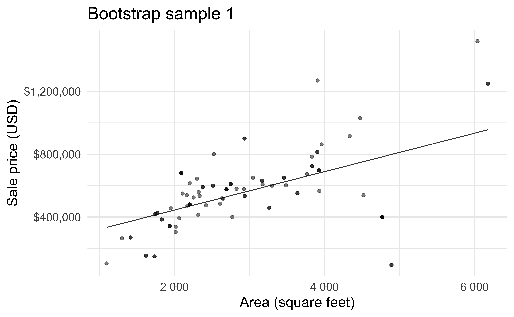
Bootstrap sample 2
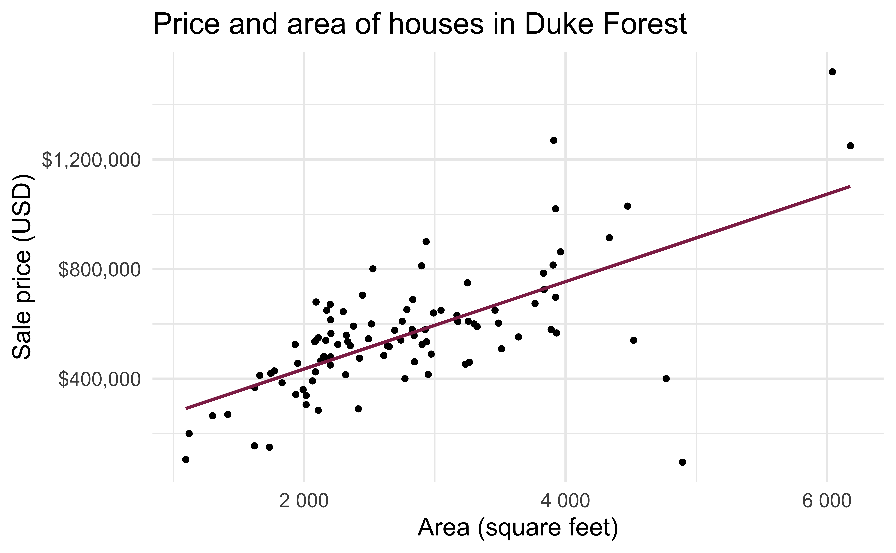
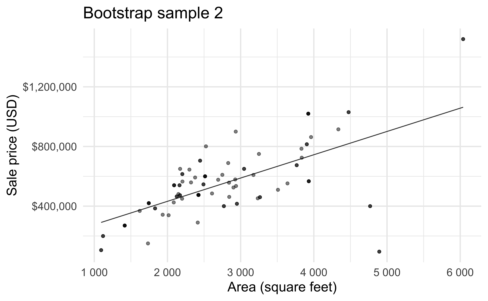
Bootstrap sample 3

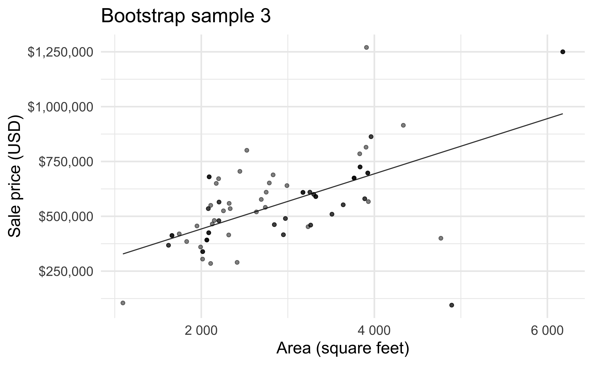
Bootstrap sample 4

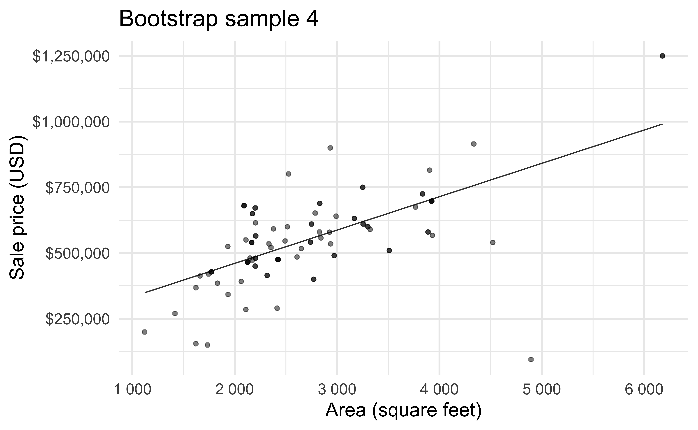
Bootstrap sample 5

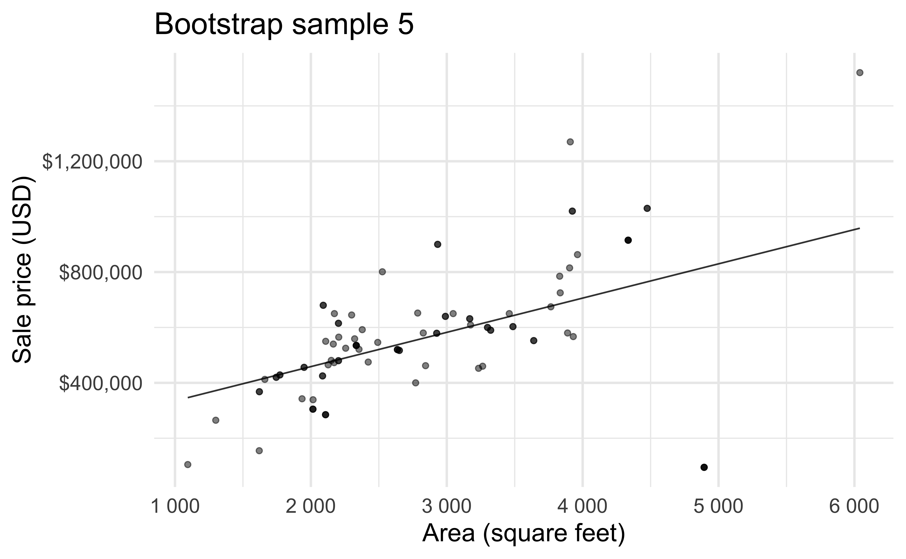
. . .
so on and so forth…
Bootstrap samples 1 - 5

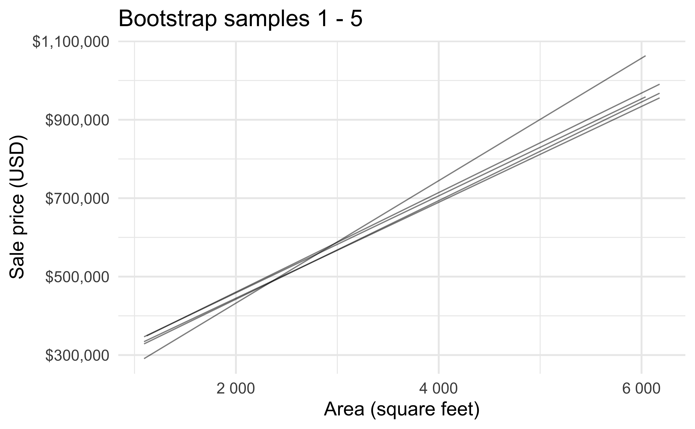
Bootstrap samples 1 - 100

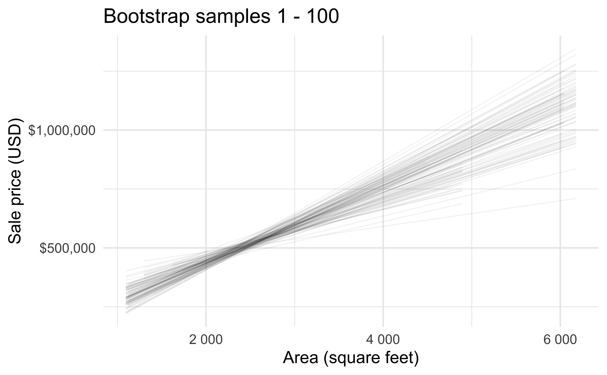
Slopes of bootstrap samples
Fill in the blank: For each additional square foot, the model predicts the sale price of Duke Forest houses to be higher, on average, by $159, give or take ___ dollars.
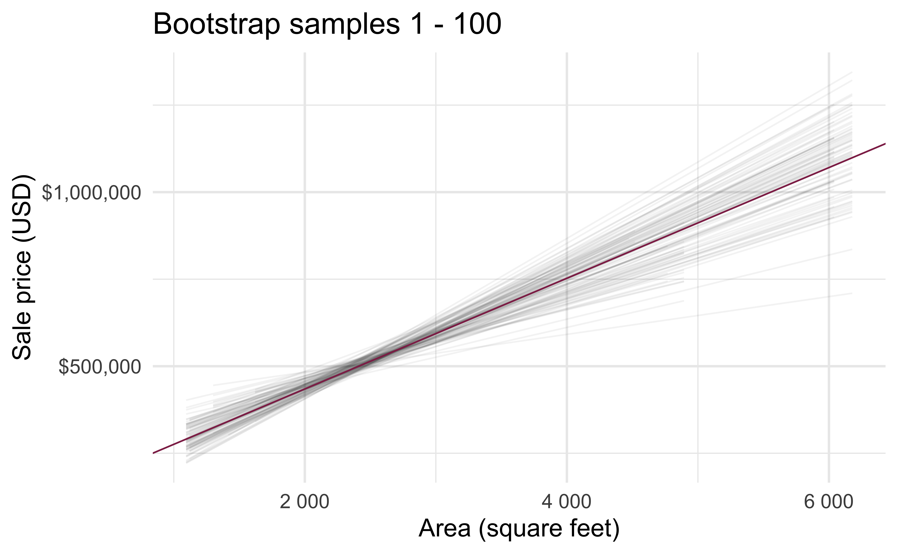
Slopes of bootstrap samples
Fill in the blank: For each additional square foot, the model predicts the sale price of Duke Forest houses to be higher, on average, by $159, give or take ___ dollars.
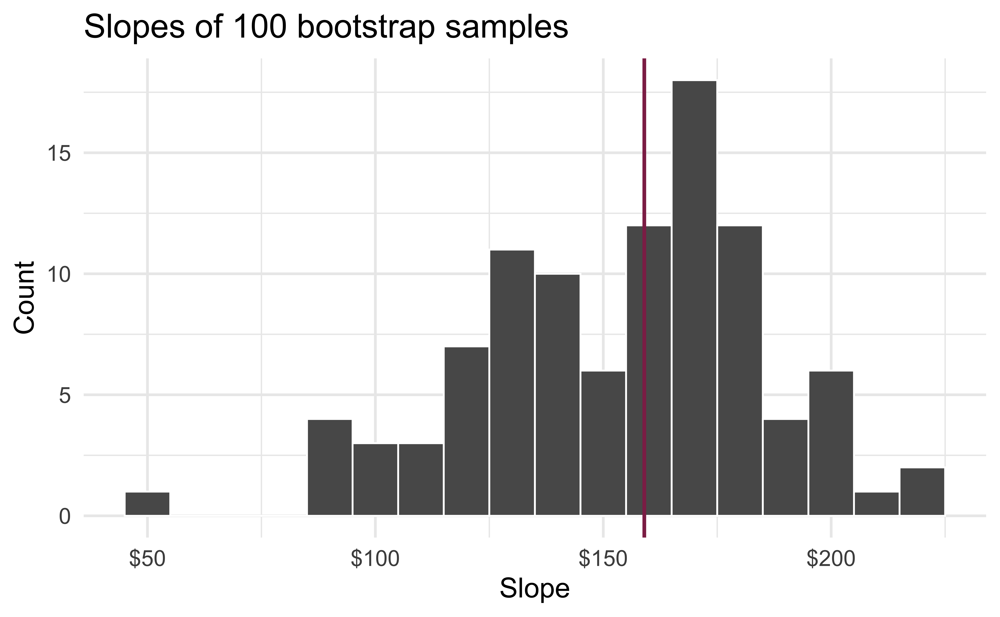
Confidence level
How confident are you that the true slope is between $0 and $250? How about $150 and $170? How about $90 and $210?

95% confidence interval
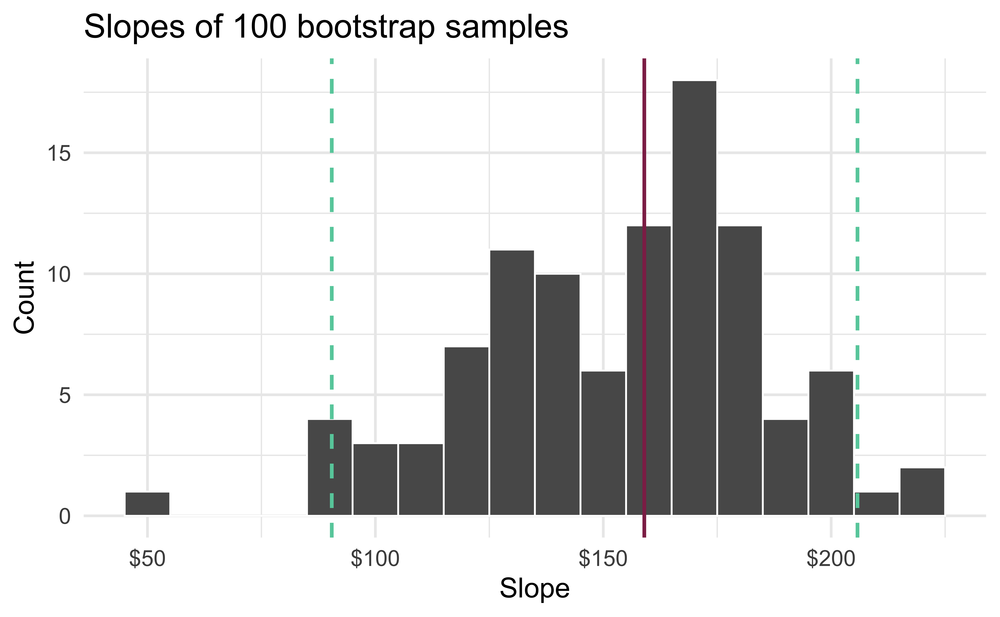
- A 95% confidence interval is bounded by the middle 95% of the bootstrap distribution
- We are 95% confident that For each additional square foot, the model predicts the sale price of Duke Forest houses to be higher, on average, by $90.43 to $205.77.
Computing the CI for the slope I
Calculate the observed slope:
observed_fit <- duke_forest %>%
specify(price ~ area) %>%
fit()
observed_fit# A tibble: 2 × 2
term estimate
<chr> <dbl>
1 intercept 116652.
2 area 159.Computing the CI for the slope II
Take 100 bootstrap samples and fit models to each one:
# #| code-line-numbers: "1,5,6"
set.seed(1120)
boot_fits <- duke_forest %>%
specify(price ~ area) %>%
generate(reps = 100, type = "bootstrap") %>%
fit()
boot_fits# A tibble: 200 × 3
# Groups: replicate [100]
replicate term estimate
<int> <chr> <dbl>
1 1 intercept 47819.
2 1 area 191.
3 2 intercept 144645.
4 2 area 134.
5 3 intercept 114008.
6 3 area 161.
7 4 intercept 100639.
8 4 area 166.
9 5 intercept 215264.
10 5 area 125.
# … with 190 more rowsComputing the CI for the slope III
Percentile method: Compute the 95% CI as the middle 95% of the bootstrap distribution:
# #| code-line-numbers: "5"
get_confidence_interval(
boot_fits,
point_estimate = observed_fit,
level = 0.95,
type = "percentile"
)# A tibble: 2 × 3
term lower_ci upper_ci
<chr> <dbl> <dbl>
1 area 92.1 223.
2 intercept -36765. 296528.Computing the CI for the slope IV
Standard error method: Alternatively, compute the 95% CI as the point estimate \(\pm\) ~2 standard deviations of the bootstrap distribution:
# #| code-line-numbers: "5"
get_confidence_interval(
boot_fits,
point_estimate = observed_fit,
level = 0.95,
type = "se"
)# A tibble: 2 × 3
term lower_ci upper_ci
<chr> <dbl> <dbl>
1 area 90.8 228.
2 intercept -56788. 290093.Precision vs. accuracy
If we want to be very certain that we capture the population parameter, should we use a wider or a narrower interval? What drawbacks are associated with using a wider interval?
. . .

Precision vs. accuracy
How can we get best of both worlds – high precision and high accuracy?
Changing confidence level
How would you modify the following code to calculate a 90% confidence interval? How would you modify it for a 99% confidence interval?
# #| code-line-numbers: "|4"
get_confidence_interval(
boot_fits,
point_estimate = observed_fit,
level = 0.95,
type = "percentile"
)# A tibble: 2 × 3
term lower_ci upper_ci
<chr> <dbl> <dbl>
1 area 92.1 223.
2 intercept -36765. 296528.Changing confidence level
## confidence level: 90%
get_confidence_interval(
boot_fits, point_estimate = observed_fit,
level = 0.90, type = "percentile"
)# A tibble: 2 × 3
term lower_ci upper_ci
<chr> <dbl> <dbl>
1 area 104. 212.
2 intercept -24380. 256730.## confidence level: 99%
get_confidence_interval(
boot_fits, point_estimate = observed_fit,
level = 0.99, type = "percentile"
)# A tibble: 2 × 3
term lower_ci upper_ci
<chr> <dbl> <dbl>
1 area 56.3 226.
2 intercept -61950. 370395.Recap
- Population: Complete set of observations of whatever we are studying, e.g., people, tweets, photographs, etc. (population size = \(N\))
- Sample: Subset of the population, ideally random and representative (sample size = \(n\))
- Sample statistic \(\ne\) population parameter, but if the sample is good, it can be a good estimate
- Statistical inference: Discipline that concerns itself with the development of procedures, methods, and theorems that allow us to extract meaning and information from data that has been generated by stochastic (random) process
- We report the estimate with a confidence interval, and the width of this interval depends on the variability of sample statistics from different samples from the population
- Since we can’t continue sampling from the population, we bootstrap from the one sample we have to estimate sampling variability
Sampling is natural

- When you taste a spoonful of soup and decide the spoonful you tasted isn’t salty enough, that’s exploratory analysis
- If you generalize and conclude that your entire soup needs salt, that’s an inference
- For your inference to be valid, the spoonful you tasted (the sample) needs to be representative of the entire pot (the population)
Hypothesis test for the slope
Statistical significance
Do the data provide sufficient evidence that \(\beta_1\) (the true slope for the population) is different from 0?
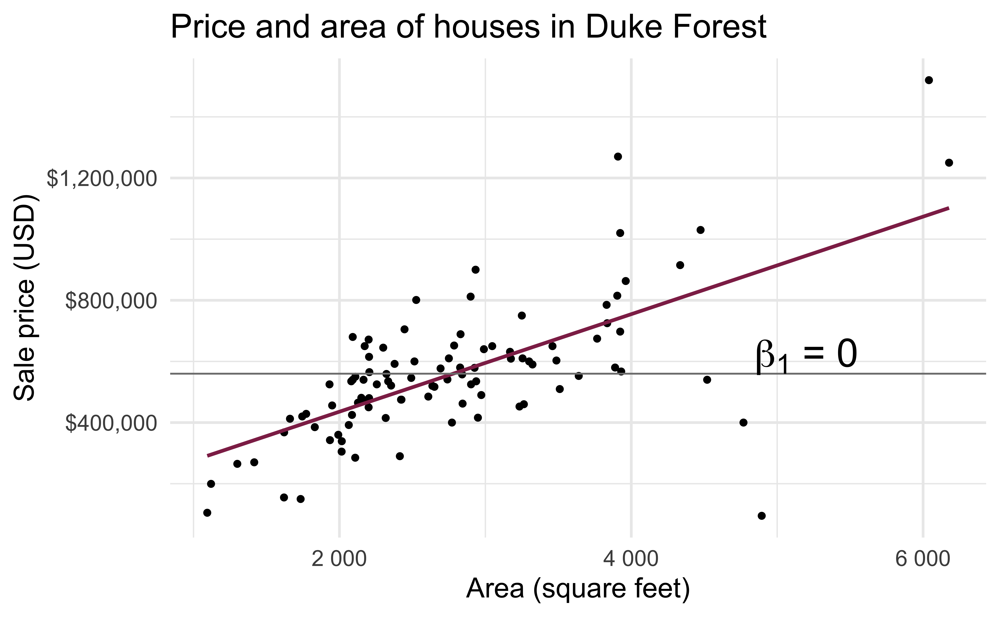
Hypotheses
- We want to answer the question “Do the data provide sufficient evidence that \(\beta_1\) (the true slope for the population) is different from 0?”
- Null hypothesis - \(H_0: \beta_1 = 0\), there is no linear relationship between
areaandprice - Alternative hypothesis - \(H_A: \beta_1 \ne 0\), there is a linear relationship between
areaandprice
Hypothesis testing as a court trial
- Null hypothesis, \(H_0\): Defendant is innocent
- Alternative hypothesis, \(H_A\): Defendant is guilty
- Present the evidence: Collect data
- Judge the evidence: “Could these data plausibly have happened by chance if the null hypothesis were true?”
Yes: Fail to reject \(H_0\)
No: Reject \(H_0\)
Hypothesis testing framework
- Start with a null hypothesis, \(H_0\) that represents the status quo
- Set an alternative hypothesis, \(H_A\) that represents the research question, i.e. what we’re testing for
- Conduct a hypothesis test under the assumption that the null hypothesis is true and calculate a p-value (probability of observed or more extreme outcome given that the null hypothesis is true)
- if the test results suggest that the data do not provide convincing evidence for the alternative hypothesis, stick with the null hypothesis
- if they do, then reject the null hypothesis in favor of the alternative